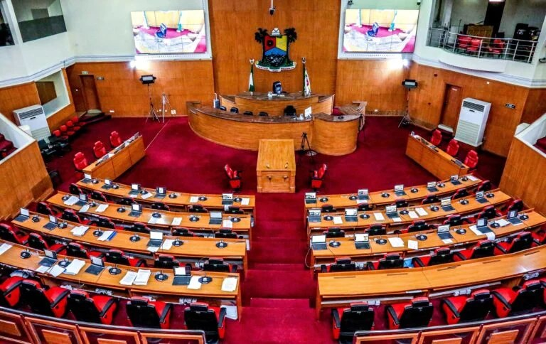

Lagos Assembly okays state police, demands clear power-sharing

The Lagos State House of Assembly has endorsed the proposed creation of state police, while calling for constitutional changes that give states clearer authority over their forces and spell out how they would work alongside federal police. Speaker Mudashiru Obasa set out the concerns on Tuesday during debate on the Constitution of the Federal Republic of Nigeria, 1999 (Sixth Alteration) Bill, 2026, sent to state legislatures by the National Assembly.
Obasa described the proposal as progress on a long-standing demand, but said the bill did not yet resolve who would control and administer state police. He warned that leaving substantial powers with the federal government could weaken the purpose of establishing state forces. The amendment, he said, should define the functions and responsibilities of each level of policing to avoid an imbalance.
The demand for state police has continued through successive National Assemblies, from the fifth to the 10th, as governments seek ways to improve security and protect lives and property, Obasa said. State legislatures are considering the constitutional changes needed to establish a State Police Service, and nearly 25 states have expressed support, according to the material provided. Obasa commended President Bola Tinubu, National Assembly leaders and state lawmakers for advancing the process, while urging them to address outstanding concerns before it is concluded.
He also argued that legislative institutions should have dedicated security arrangements. Citing past incidents in which state legislative complexes were allegedly demolished or locked at the direction of governors, he said parliamentary police could help protect legislatures from executive interference and preserve their independence. Obasa directed the Assembly’s Clerk, Adenike Oshinowo, to formally convey the Lagos resolution to the National Assembly.
Source: Punch